Epizentrum najgroźniejszej katastrofy w historii energetyki jądrowej. 26 kwietnia 1986 r. o godzinie 1:23:45, w wyniku nieudanego testu systemu bezpieczeństwa, w reaktorze RBMK-1000 nastąpił gwałtowny wzrost mocy, co doprowadziło do dwóch eksplozji pary i wodoru. Wybuch całkowicie zniszczył rdzeń, wyrywając 1000-tonową pokrywę (tzw. Helenę) i uwalniając do atmosfery ok. 5300 PBq substancji promieniotwórczych — ponad 400 razy więcej niż bomba zrzucona na Hiroszimę.
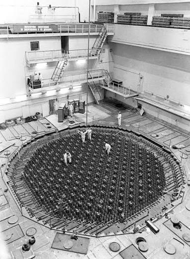
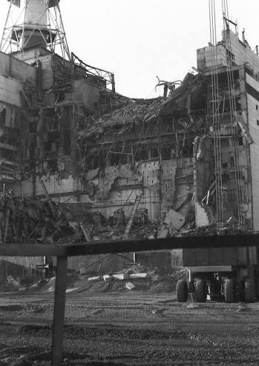
Sterownia Reaktora nr 4 (Control Room)
Mroczne serce katastrofy, z którego kierowano pracą IV bloku. To w tym pomieszczeniu zapadały krytyczne decyzje podejmowane pod naciskiem zastępcy naczelnego inżyniera Anatolija Diatłowa. O godzinie 1:23:40 operator Leonid Toptunow wcisnął przycisk awaryjny AZ-5 (prętów wygaszających), co z powodu wadliwej konstrukcji prętów z grafitowymi końcówkami wywołało efekt odwrotny i doprowadziło do natychmiastowej eksplozji. Dziś pomieszczanie jest całkowicie zdemontowane i skażone, a wstęp wymaga specjalnych kombinezonów.
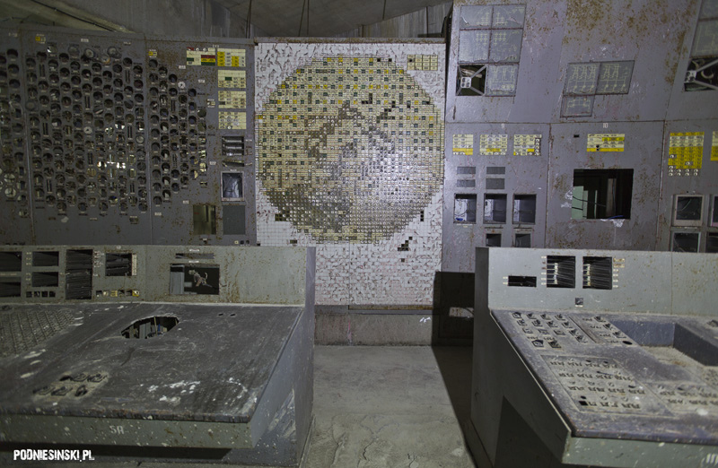
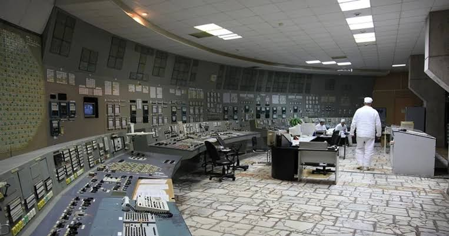
Sarkofag i Arka (New Safe Confinement)
Pierwszy betonowy „Sarkofag” zbudowano w ekstremalnych warunkach w zaledwie 206 dni od katastrofy, poświęcając zdrowie ponad 600 tysięcy tzw. likwidatorów. Ponieważ konstrukcja z czasem zaczęła pękać, w 2016 roku wzniesiono Nową Bezpieczną Powłokę (NSC). Jest to największa na świecie ruchoma konstrukcja lądowa — waży ponad 36 000 ton, ma 108 metrów wysokości i 257 metrów rozpiętości. Arka ma zabezpieczać reaktor przez najbliższe 100 lat i umożliwić zdalny demontaż zniszczonego rdzenia.
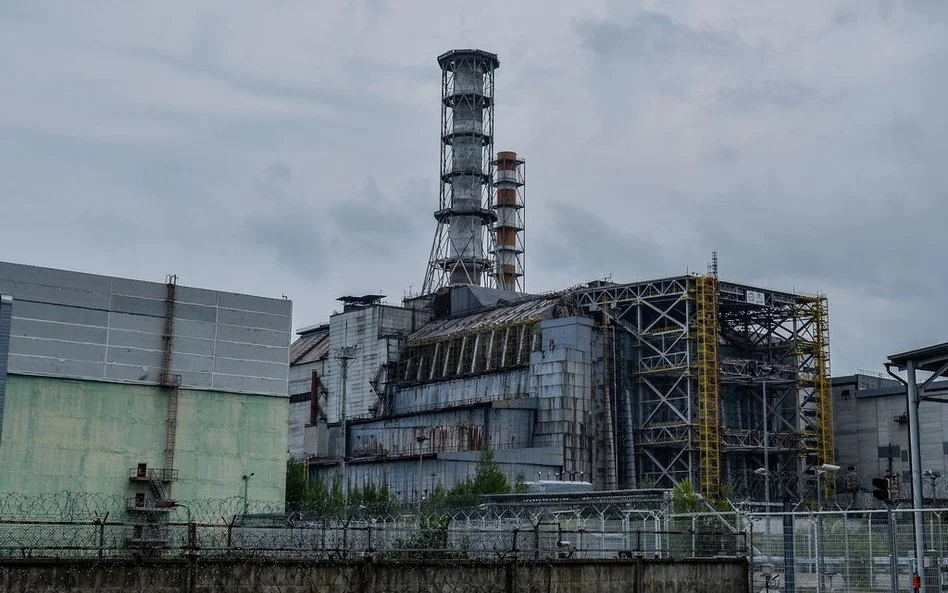
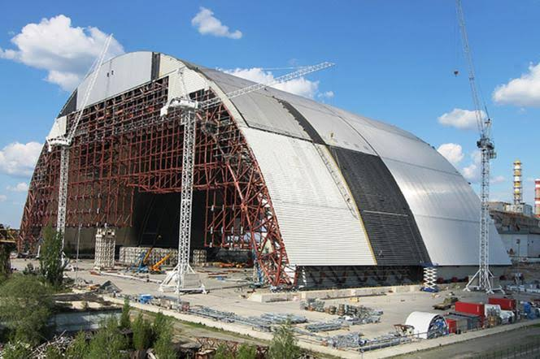
02_Miasto_Widmo_Prypec.doc[_][X]
Wzorcowe radzieckie miasto socjalistyczne założone w 1970 roku dla pracowników elektrowni. W momencie ewakuacji (27 kwietnia 1986 r.) liczyło blisko 50 000 mieszkańców, których wywieziono w ciągu 3 godzin flotą 1200 autobusów. Dziś to miasto-widmo, powoli niszczone przez naturę.
Pałac Kultury "Energetyk"
Główny ośrodek życia społecznego Prypeci, mieszczący się przy placu Lenina. Wewnątrz znajdowały się sale koncertowe, kino, basen, sala gimnastyczna oraz studio nagrań. To tutaj odbywały się wiece i próby lokalnych zespołów. W pierwszych dniach po awarii budynek służył jako sztab kryzysowy oraz punkt dyslokacji dla sztabu wojskowego kierującego akcją ratunkową.
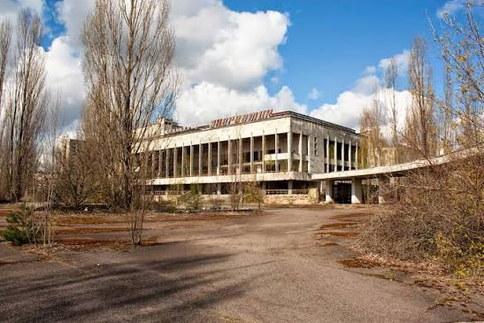
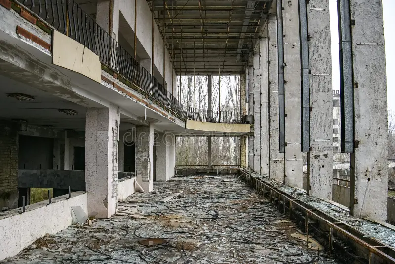
Hotel "Polesie" (Polissya)
Wybudowany w połowie lat 70. najwyższy punkt widokowy w centrum Prypeci. Po ewakuacji mieszkańców na dachu hotelu stacjonowali wojskowi obserwatorzy i dozymetryści. Stąd kierowano operacją zasypywania płonącego rdzenia reaktora ołowiem, piaskiem i borem z helikopterów Mi-8, narażając pilotów na śmiertelne dawki promieniowania.
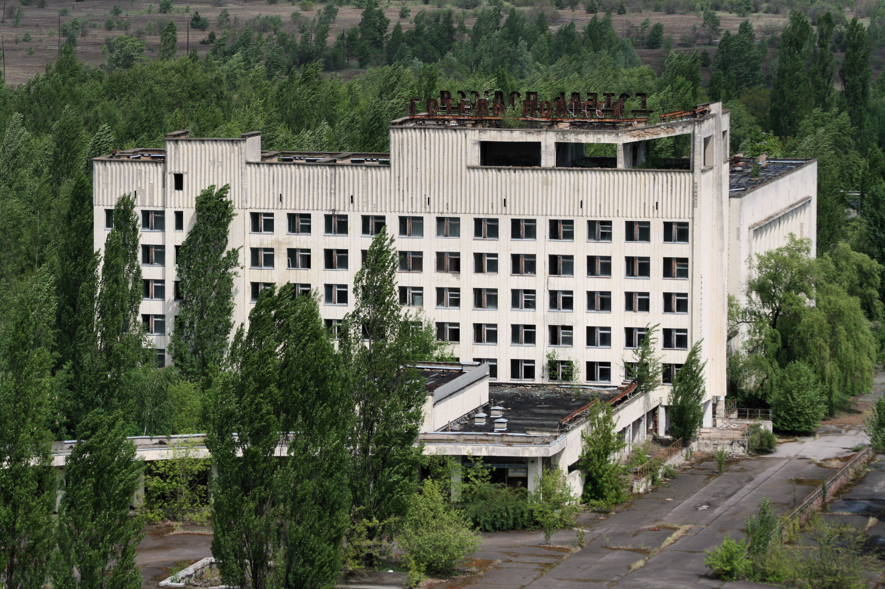
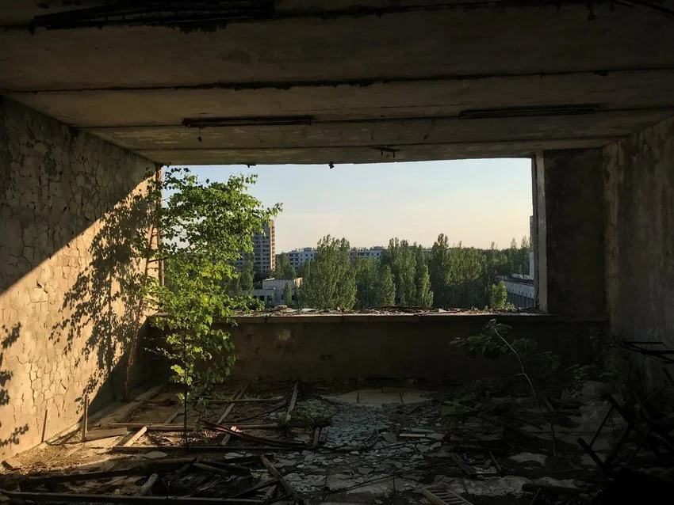
Wesołe Miasteczko i Diabelski Młyn
Park rozrywki miał zostać uroczyście otwarty podczas obchodów Święta Pracy — 1 maja 1986 roku. Żadne dziecko nigdy oficjalnie z niego nie skorzystało (uruchomiono go jedynie na parę godzin 27 kwietnia, by odwrócić uwagę mieszkańców przed ewakuacją). Żółty diabelski młyn mierzący 26 metrów wysokości oraz rdzewiejące samochodziki stanowią dziś najbardziej rozpoznawalny i przygnębiający symbol przerwanego życia w Zonie.
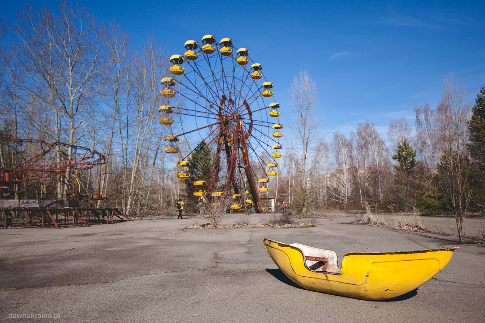
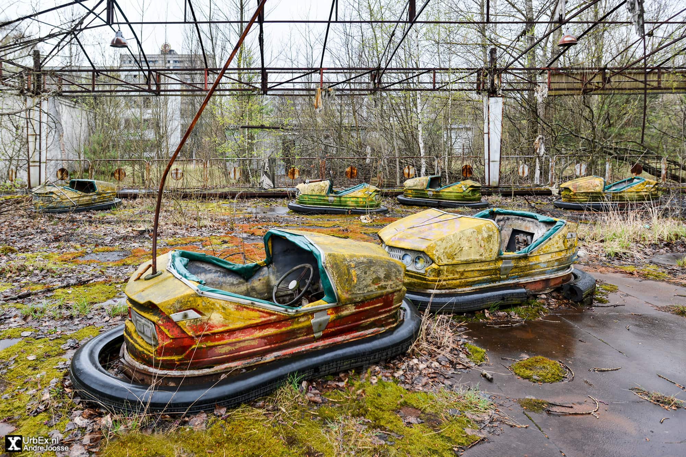
Szpital nr 126 i Piwnica Strażaków
Miejskie centrum medyczne, do którego trafili pierwsi strażacy z jednostki SVPCh-6 pod dowództwem Wiktora Kibenoka i Władimira Prawika. Lekarze nie znali jeszcze skali skażenia — odzież strażaków zrzucono do szpitalnej piwnicy. Pomieszczenie to do dzisiaj pozostaje jednym z najniebezpieczniejszych miejsc na Ziemi: odzież emituje promieniowanie gamma na poziomie kilkunastu miliSiwertów na godzinę, co może wywołać chorobę popromienną w zaledwie kilkadziesiąt minut przebywania w jej pobliżu.
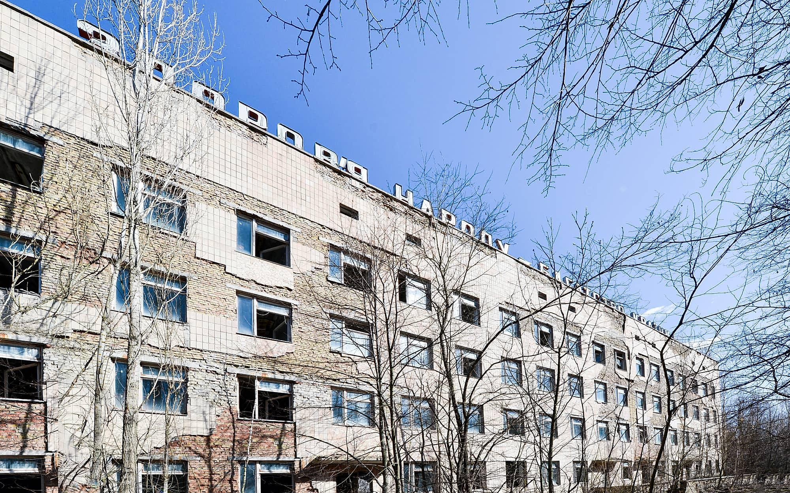
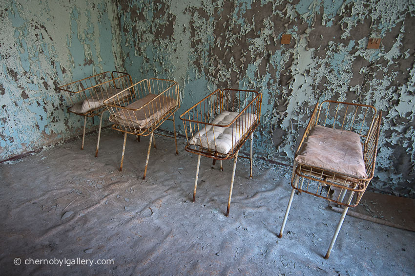
Basen "Lazurowy"
Jeden z niewielu obiektów w Prypeci, który działał jeszcze długo po katastrofie. Został zdekontaminowany i służył likwidatorom oraz pracownikom nadzorującym elektrownię aż do 1998 roku (12 lat po wybuchu). Obecnie zrujnowana niecka basenu z charakterystyczną skocznią jest stałym punktem wycieczek oraz lokacją znaną z gier komputerowych, takich jak S.T.A.L.K.E.R. czy Call of Duty: Modern Warfare.
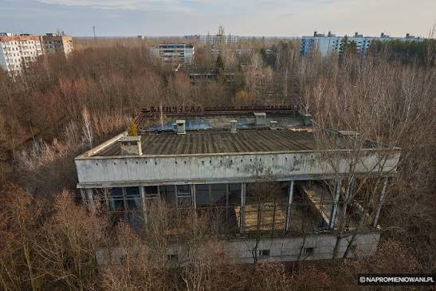
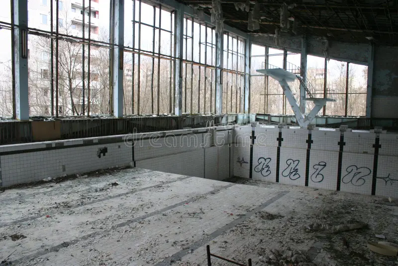
03_Oko_Moskwy_DUGA.dat[_][X]
Radar Pozahoryzontalny DUGA (Czarnobyl-2)
Tajna radziecka instalacja wojskowa służąca do wykrywania ewentualnego startu amerykańskich pocisków balistycznych z głowicami nuklearnymi. Gigantyczny system antenowy ma 150 metrów wysokości, prawie 500 metrów długości i waży ponad 14 000 ton. Nadajnik wywoływał zakłócenia w cywilnym odbiorze fal krótkich na całym świecie, emitując charakterystyczny stukot o częstotliwości 10 Hz — stąd jego zachodni kryptonim "Russian Woodpecker" (Rosyjski Dzięcioł). Do utrzymania kompleksu zbudowano w lesie tajne minimiasteczko Czarnobyl-2.
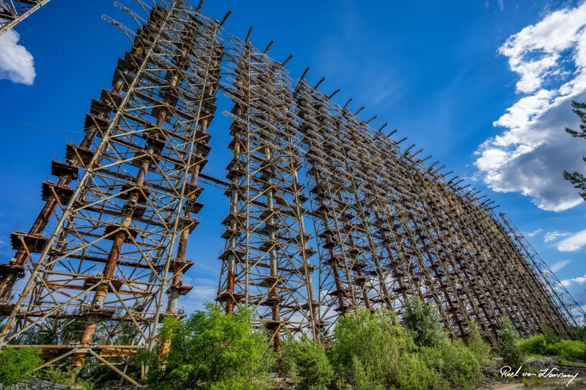
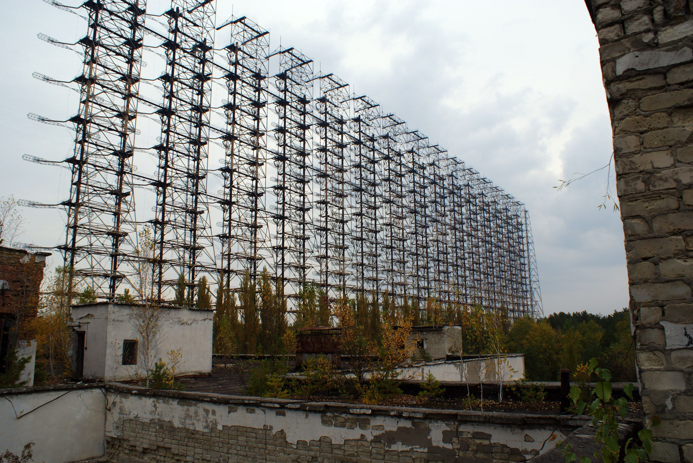
04_Cmentarzyska_Maszyn.exe [TOP SECRET][_][X]
Podczas usuwania skutków awarii użyto tysięcy jednostek ciężkiego sprzętu. Pojazdy pracujące bezpośrednio przy gruzach reaktora wchłonęły śmiertelne dawki promieniowania i nigdy nie mogły opuścić strefy.
Rasocha i Buriakówka (Złomowiska)
Składowiska skażonego sprzętu wojskowego i cywilnego. Na cmentarzysku w Rasosze zgromadzono ponad 1600 pojazdów: wozy strażackie ZiŁ-130, opancerzone wozów rozpoznawcze BRDM-2, spychacze BAT-M oraz potężne helikoptery transportowe Mi-6 i Mi-26. Ze względu na nielegalny proceder pozyskiwania części przez złomiarzy, zepchnięto sprzęt do głębokich rowów i zasypano gruntu na cmentarzysku w Buriakówce, które do dziś jest oficjalnym punktem składowania odpadów promieniotwórczych.
* Sprzęt z Rasochy został całkowicie zutylizowany i zezłomowany po przetopieniu w specjalnych piecach.
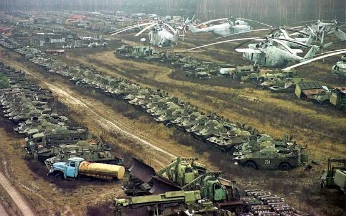
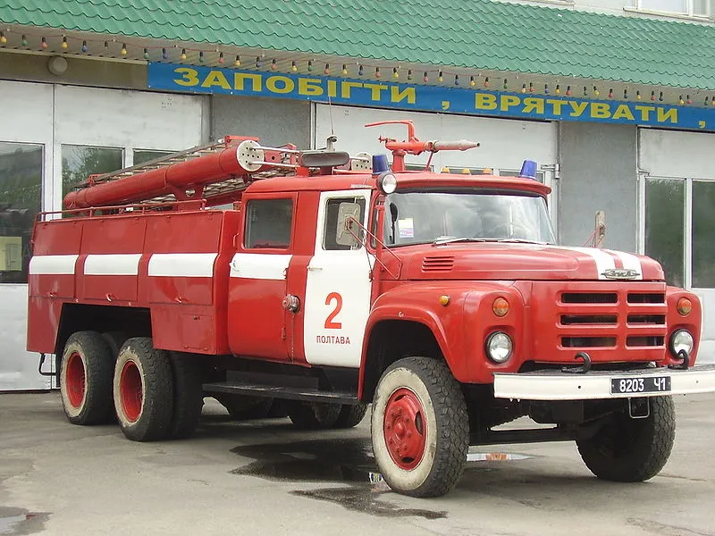
05_Wazne_Postacie_Strefy.usr[_][X]
Akta i biografie kluczowych postaci: inżynierów, naukowców, ratowników oraz likwidatorów, którzy odegrali bezpośrednią rolę w wydarzeniach z 1986 roku.
Anatolij Diatłow
Zastępca naczelnego inżyniera ds. eksploatacji Bloku Energetycznego nr 4. Nadzorował feralny test bezpieczeństwa w nocy 26 kwietnia. Skazany na 10 lat więzienia za nieprzestrzeganie zasad bezpieczeństwa (odbył 5 lat). Do końca życia utrzymywał, że główną przyczyną awarii były wady konstrukcyjne reaktora RBMK-1000.
Walerij Legasow
Zastępca dyrektora Instytutu Energii Atomowej im. Kurczatowa, główny naukowiec w komisji rządowej badającej przyczyny katastrofy. To on podjął kluczowe decyzje o zasypywaniu płonącego reaktora borem i ołowiem. Jego odważne wystąpienie w Wiedniu ujawniło część prawdy o tragedii, a spisane przez niego taśmy przyczyniły się do modernizacji reaktorów RBMK.
Trzej Nurkowie ("Drużyna Samobójców")
Aleksiej Ananenko, Walerij Bezpałow i Borys Baraniw — inżynierowie i wojskowi, którzy zeszli do zalanych piwnic pod reaktorem, by ręcznie otworzyć zawory odpływowe zbiornika rozpyłowego. Ich heroiczny czyn zapobiegł kolejnej eksplozji parowej po przetopieniu się paliwa. Wbrew powszechnemu mitowi o ich natychmiastowej śmierci, przetrwali oni opromienienie i przeżyli długie lata po awarii.